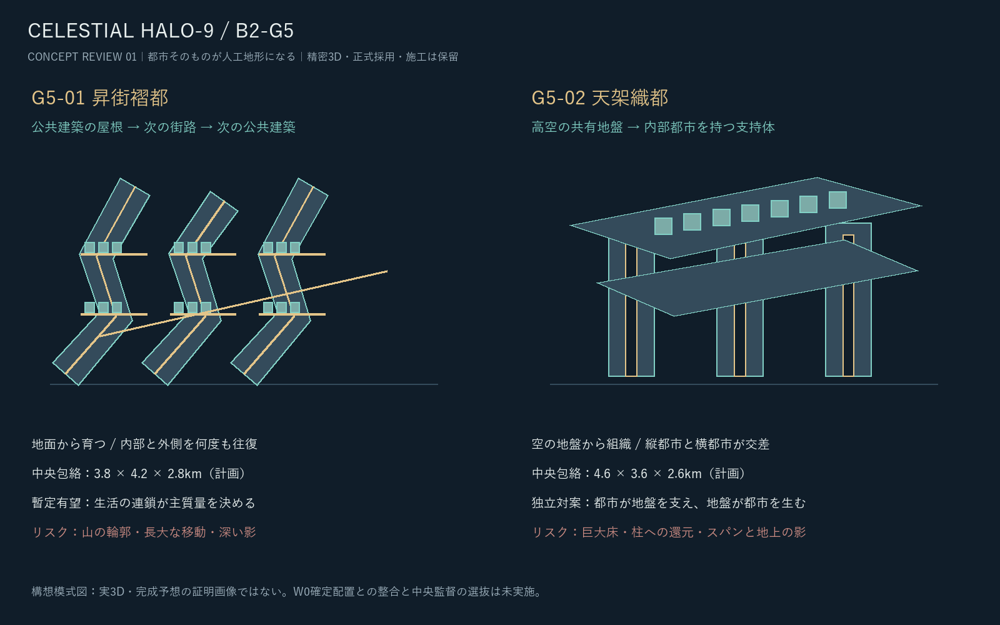
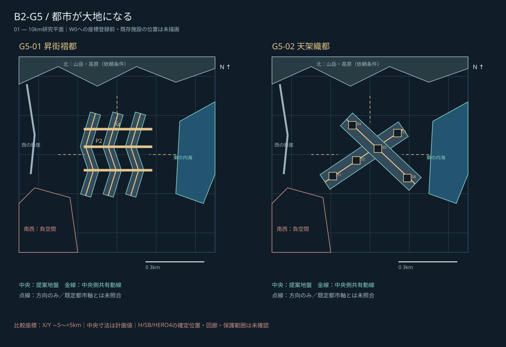
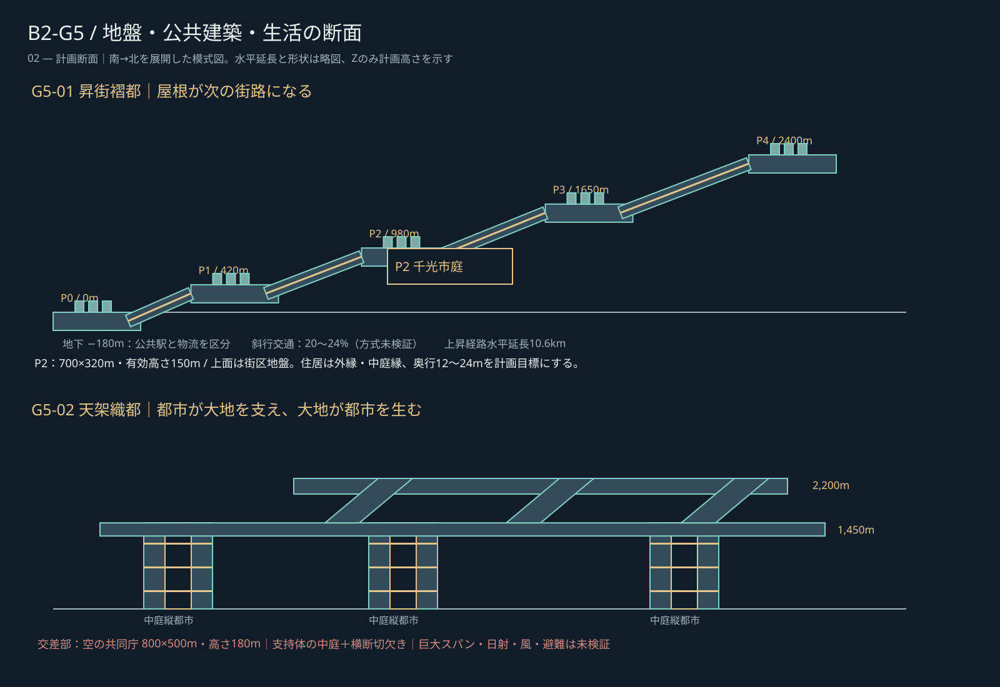
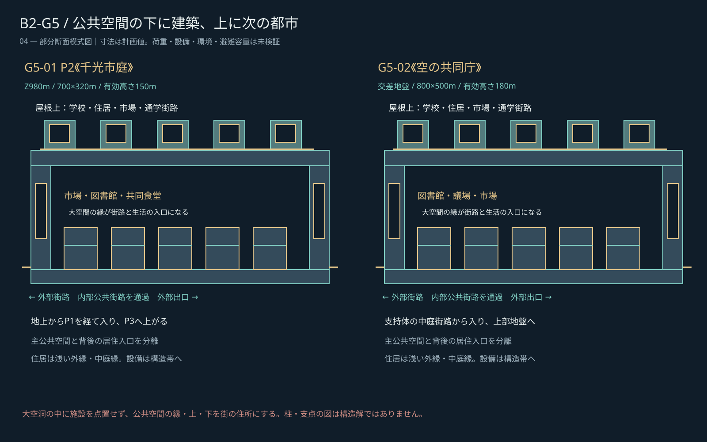
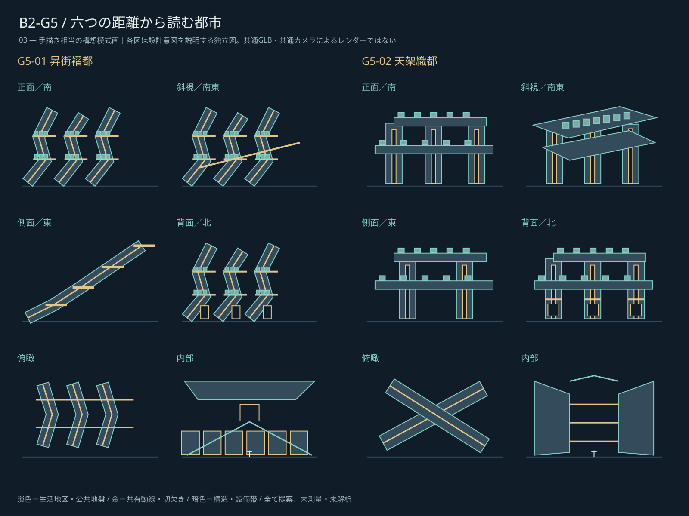

B2-G5｜都市が大地になる
2026-10-23 / art/b / G5構想審査・revision 01

10km都市の地形と中央

公共建築が生活地盤になる断面

巨大公共空間の生活断面

V1〜V3・三大都市軸・景観回廊は維持条件。M207 U/H/VとM204 X/H/Zの共通アンカーは0件、推測による座標統合は行いません。
六景観の設計意図
独立した模式画です。共通モデルからの投影やカメラ比較ではありません。各方向の審査要件は研究報告に記載しています。

既定配置を保持する接続予約
方角・用途をIDから推定せず、中央側受入口だけを仮設定。既存施設を移す計画ではありません。共有幹線と乗換口を用い、23本の専用橋を要求しません。
| 対象 | 昇街褶都 | 天架織都 | 状態 |
|---|
| H1 | P1＋独立縦交通 | 下部地盤東端 | 端点未確認 |
| H2 | P2東側街路 | 下部地盤北端 | 端点未確認 |
| H3 | P2西側街路 | 支持体地域駅→下部地盤 | 端点未確認 |
| H4 | P3横断生活街路 | 上部地盤東端 | 端点未確認 |
| H5 | P4南側公共街路 | 上部地盤北端 | 端点未確認 |
| H6 | P3/P4間の乗換口 | 上下交差公共街区 | 端点未確認 |
| SB01 | 地上東口→P0 | 地上東口→縦都市 | 端点未確認 |
| SB02 | 地上北口→P1 | 地上北口→下部地盤 | 端点未確認 |
| SB03 | 地上西口→P0 | 地上西口→縦都市 | 端点未確認 |
| SB04 | P1公共街路 | 下部地盤公共街路 | 端点未確認 |
| SB05 | P1横断街路 | 下部地盤交差節 | 端点未確認 |
| SB06 | P2東側街路 | 下部地盤東端 | 端点未確認 |
| SB07 | P2市場縁 | 下部地盤地域庭 | 端点未確認 |
| SB08 | P2北側出口 | 支持体Z700m地域街路 | 端点未確認 |
| SB09 | P3東側街路 | 上部地盤東端 | 端点未確認 |
| SB10 | P3横断街路 | 上部地盤交差節 | 端点未確認 |
| SB11 | P3北側街路 | 上部地盤北端 | 端点未確認 |
| SB12 | P4水平生活街路 | 上部地盤地域街路 | 端点未確認 |
| SB13 | P4西側街路 | 上部地盤西端 | 端点未確認 |
| SB14 | P0地上回廊 | 地上独立回廊 | 端点未確認 |
| SB15 | P2/P3乗換口 | 上下地盤間乗換口 | 端点未確認 |
| SB16 | 地下公共駅→分散出口 | 地下公共駅→縦都市 | 端点未確認 |
| HERO4 | 主眺望回廊→P2 | 眺望から帯を退かせ交差部へ | 端点未確認 |
審査の結論と限界
昇街褶都は公共建築の屋根と次の街路を反復し、接近するほど生活都市が現れる原理に優位があります。天架織都は高空地盤と内部都市を持つ支持体から別の文明像をつくります。山塊、厚い壁、巨大床への退行は両案の審査リスクです。構造、採光、風、避難、交通容量は未検証です。
4先例・二案・断面・六景観・美術比較の全文 / 一次資料と継承記録 / 接続台帳 / 実施済み検証 / 成果物索引